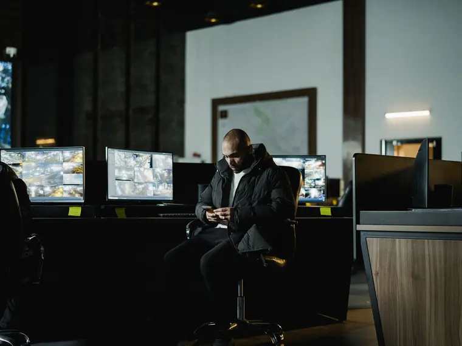
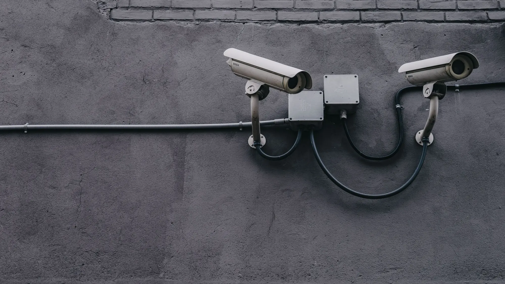
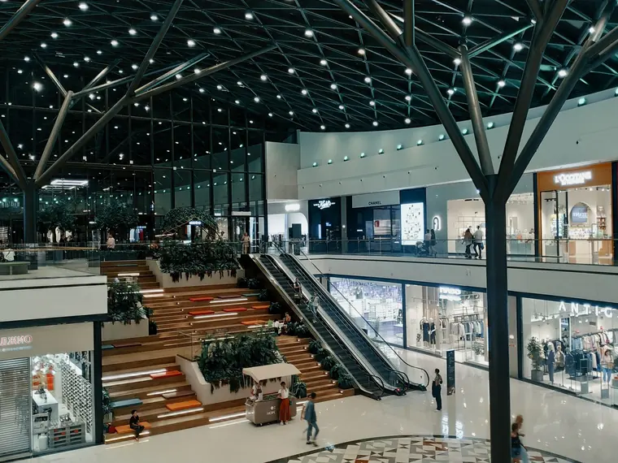
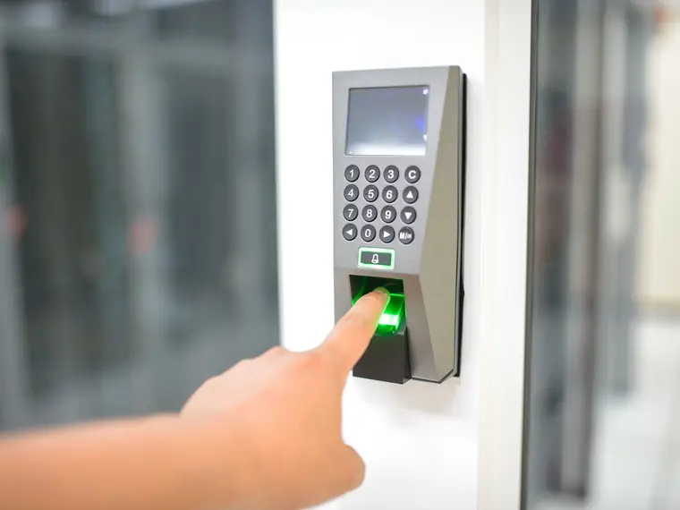
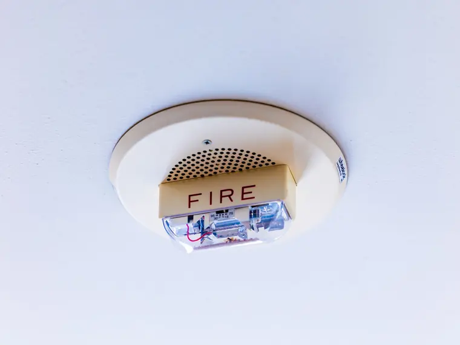
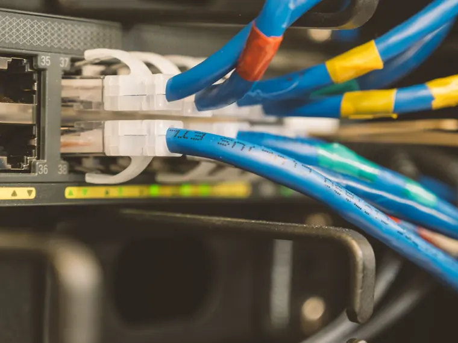
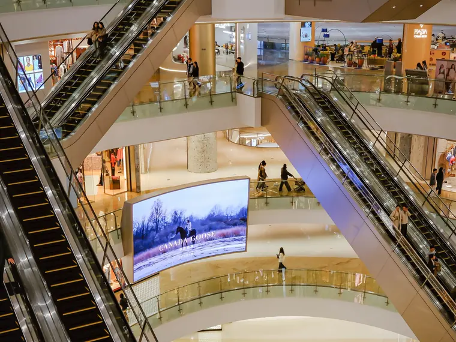
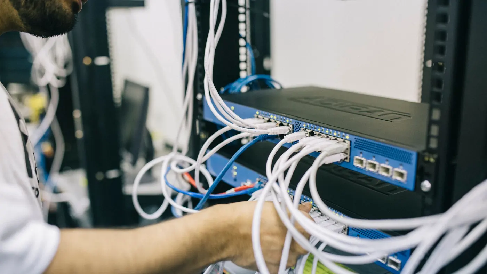
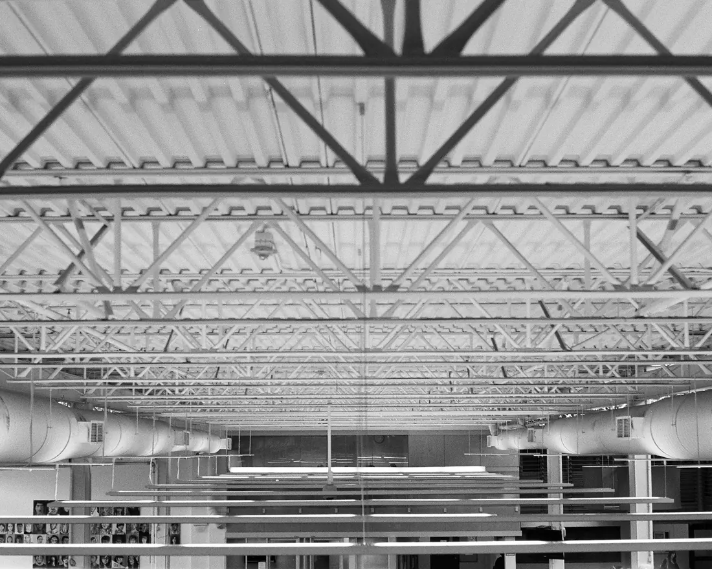
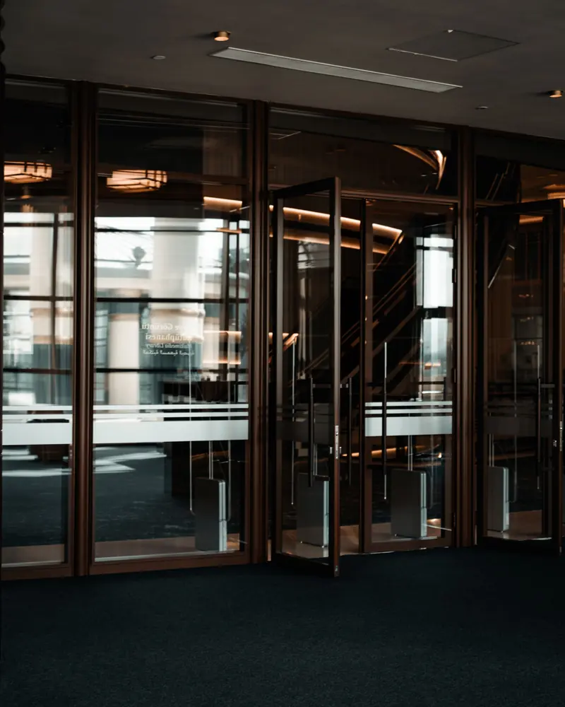

01
Videonovērošana
Videonovērošanas sistēmu piegāde un izbūve. Mūsu objekti: lidosta „Rīga”, IKEA Latvia, Viada DUS, Elkor Plaza.

Vājstrāvu sistēmu risinājumi
SIA „2K Services” projektē, piegādā, uzstāda un apkalpo vājstrāvu sistēmas birojiem, veikaliem, noliktavām un ražotnēm visā Latvijā.
Sistēmas
Sadarbojamies ar nozares vadošajiem iekārtu ražotājiem un viņu pārstāvjiem un palīdzam rast tehnoloģiskos risinājumus, kas pielāgoti klienta vajadzībām.

Videonovērošanas sistēmu piegāde un izbūve. Mūsu objekti: lidosta „Rīga”, IKEA Latvia, Viada DUS, Elkor Plaza.

Preču aizsardzības sistēmas tirdzniecībai. Mūsu objekti: Elkor Plaza, Euroaptieka, Mego.

Apsardzes signalizācija, piekļuves kontrole, durvju kontrole un perimetra apsardze. Mūsu objekti: Z-Towers, LMT Retail & Logistics, MikroTik noliktava.

Automātiskās ugunsgrēka atklāšanas un trauksmes signalizācijas sistēmas, izziņošana un dūmu novadīšanas automātika.

Datu pārraide, datu tīkli un telekomunikāciju tīkli. Mūsu objekti: LMT Retail & Logistics, Baltijas Industriālais parks.

Apmeklētāju uzskaites un rindu regulēšanas sistēmas. Rindu regulēšana darbojas Rīgas 1. slimnīcā un Rīgas veselības centrā.
Pakalpojumi
Varam uzņemties visu ciklu vai tikai vienu posmu. Vājstrāvu tīklus apkalpojam arī pēc nodošanas ekspluatācijā.

Palīdzam izvēlēties piemērotāko risinājumu jūsu objektam un uzdevumam.
Pieredzējuši un sertificēti speciālisti izstrādā projektu atbilstoši izvēlētajam risinājumam.
Sadarbojamies ar nozares vadošajiem iekārtu ražotājiem un viņu pārstāvjiem.
Kvalitatīvi un laikā uzstādām sistēmas un nododam tās ekspluatācijā.
Uzturam, apkalpojam un rekonstruējam visu veidu vājstrāvu tīklus.
WiSeNe® jumtu monitorings
WiSeNe® ir automātiska jumtu konstrukciju drošības monitoringa sistēma. Tā mēra jumta konstrukcijas elementu izliekumus un vertikālās novirzes, kad slodze mainās: no sniega, lietus vai būvdarbu laikā.
Mērierīces stiprina tieši pie jumta konstrukcijas elementiem. Attālumu mēra ar lāzeru, sistēma nav tenzometriska.
Sistēma salīdzina izliekumu un vertikālās novirzes ar pieļaujamām un sliekšņa vērtībām un pati novērtē noslodzi.
Ja slieksnis ir pārsniegts, tā brīdina ar SMS, e-pastu, tīmekļa vietnē un ar signalizāciju.


Kentix TI multisensors
Kentix TI ir viena ierīce pie griestiem vai virs durvīm. Tā skaita cilvēkus, mēra gaisa kvalitāti un laikus pamana ugunsgrēka pazīmes. Der veikaliem, skolām, birojiem, ražošanas telpām un pasākumiem.
Ar papildierīci KIO3 sensoru var savienot ar durvīm, vārtiņiem vai turniketu un ierobežot ieeju, kad telpā ir sasniegts maksimālais cilvēku skaits.
Realizētie projekti
Kopš darba sākuma esam sadarbojušies ar Latvijas lielākajiem uzņēmumiem. Daži no objektiem un sistēmas, ko tajos izbūvējām vai piegādājām:
Apspriest savu objektupiekļuves kontrole, apsardze un durvju kontrole, ēkas automātika, dūmu novadīšanas automātika, invalīdu izsaukuma sistēma, publiskā izziņošana, izsaukuma sistēma ar trauksmes pogu, ugunsgrēka atklāšana un izziņošana, videonovērošana
videonovērošanas sistēmas izbūve
videonovērošanas sistēmas piegāde
vadības un automatizācijas sistēmas, ugunsgrēka atklāšanas un trauksmes signalizācija
ugunsdrošības un apsardzes sistēmas
apsardzes signalizācija, telekomunikāciju tīkli, piekļuves kontrole, videonovērošana, ugunsgrēka atklāšana
apsardzes signalizācija, telekomunikāciju tīkli, WC izsaukšanas sistēma, piekļuves kontrole, videonovērošana, ugunsgrēka atklāšana
videonovērošana un preču aizsardzība
videonovērošana un preču aizsardzība
videonovērošana un piekļuves kontrole
preču aizsardzības sistēmas
videonovērošanas sistēmas izbūve
perimetra apsardzes sistēmas izbūve
rindu regulēšanas sistēma
Par mums
2K Services sāka darbu 2017. gadā, apvienojoties nozares profesionāļiem. Mērķis kopš pirmās dienas: piedāvāt klientiem labākos vājstrāvu sistēmu risinājumus dažādās jomās.
Tirgojam, uzstādām un apkalpojam vājstrāvu sistēmas visā Latvijas teritorijā. Būvkomersantu reģistrā esam reģistrēti elektroietaišu izbūves darbu vadīšanai un būvuzraudzībai.
Taisnīga attieksme pret klientiem, sadarbības partneriem un kolēģiem.
Atbildība par visu, ko darām.
Pastāvīga attīstība.
Strādājam kopā, cienot viens otru.
Novērtējam atvērtu un pozitīvu ikdienas komunikāciju.
Kontakti
Uzrakstiet vai piezvaniet: kāds ir objekts, kur tas atrodas un kādas sistēmas vajadzīgas. Palīdzēsim izvēlēties risinājumu.